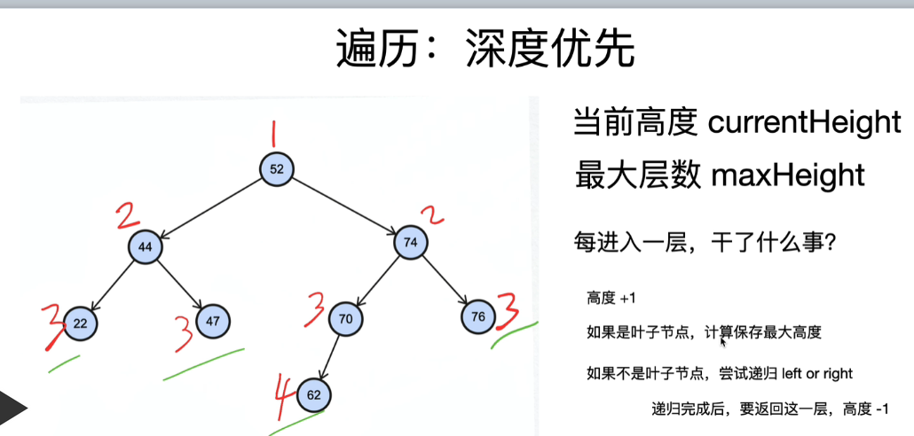

1. [代码框架] binary-tree(相关题型#94，二叉树中序遍历)
- 三种递归遍历
Refer by 更简单的非递归遍历二叉树的方法void order(TreeNode *root, vector<int> &path) { if(root != NULL) { // preorderTraversal path.push_back(root->val); order(root->left, path); order(root->right, path); // inorderTraversal order(root->left, path); path.push_back(root->val); order(root->right, path); // postorderTraversal order(root->left, path); order(root->right, path); path.push_back(root->val); } }
- 更简单的非递归遍历二叉树
- 有重合元素的局部有序一定能导致整体有序
- 将栈顶元素取出，使以此元素为“根”结点的局部有序入栈，但若此前已通过该结点将其局部入栈，则直接出栈输出即可。// 非递归遍历 void orderTraversal(TreeNode *root, vector<int> &path) { stack< pair<TreeNode *, bool> > s; // 注意： make_pair不能使用尖括号"<>" s.push(make_pair(root, false)); bool visited; while(!s.empty()) { root = s.top().first; visited = s.top().second; s.pop(); // 二遍复习忘记点：注意： 不要忘记root为空的处理 if(root == NULL) continue; // 若此前已通过该结点将其局部入栈，则直接出栈输出即可 if(visited) { path.push_back(root->val); } else { // 非递归前序遍历 s.push(make_pair(root->right, false)); s.push(make_pair(root->left, false)); s.push(make_pair(root, true)); // 只剩下一个元素，因此从stack拿出来即可 // 非递归中序遍历 s.push(make_pair(root->right, false)); s.push(make_pair(root, true)); s.push(make_pair(root->left, false)); // 非递归后序遍历 s.push(make_pair(root, true)); s.push(make_pair(root->right, false)); s.push(make_pair(root->left, false)); } } }// 非递归前序遍历简化 void preorderTraversal(TreeNode *root, vector<int> &path) { stack<TreeNode *> s; s.push(root); while(!s.empty()) { root = s.top(); s.pop(); if(root == NULL) { continue; } else { path.push_back(root->val); s.push(root->right); s.push(root->left); } } }
- 教科书上的非递归遍历//非递归前序遍历 void preorderTraversal(TreeNode *root, vector<int> &path) { stack<TreeNode *> s; TreeNode *p = root; while(p != NULL || !s.empty()) { // 沿左子树一直往下搜索，直至出现没有左子树的结点 while(p != NULL) { path.push_back(p->val); s.push(p); p = p->left; } if(!s.empty()) { p = s.top(); s.pop(); p = p->right; } } }//非递归中序遍历 void inorderTraversal(TreeNode *root, vector<int> &path) { stack<TreeNode *> s; TreeNode *p = root; while(p != NULL || !s.empty()) { while(p != NULL) { s.push(p); p = p->left; } if(!s.empty()) { p = s.top(); path.push_back(p->val); s.pop(); p = p->right; } } }// 非递归后序遍历 void posOrderUnRecur(TreeNode* root) { if (root == nullptr) { return; } std::stack<TreeNode*> s1, s2; s1.push(root); while (!s1.empty()) { TreeNode* root = s1.top(); s2.push(root); s1.pop(); if (root->left != nullptr) { s1.push(root->left); } if (root->right != nullptr) { s1.push(root->right); } } while (!s2.empty()) { std::cout << s2.top()->value << ","; s2.pop(); } }
2. [代码框架] BFS
-
队列 q 就不说了，BFS 的核心数据结构；
-
cur.adj() 泛指 cur 相邻的节点，比如说二维数组中，cur 上下左右四面的位置就是相邻节点；
-
visited 的主要作用是防止走回头路，大部分时候都是必须的，但是像一般的二叉树结构，没有子节点到父节点的指针，不会走回头路就不需要 visited。
// 计算从起点 start 到终点 target 的最近距离 int BFS(TreeNode start, TreeNode target) { Queue<TreeNode> q; // 核心数据结构 Set<TreeNode> visited; // 避免走回头路 q.offer(start); // 将起点加入队列 visited.add(start); int step = 0; // 记录扩散的步数 while (q not empty) { int sz = q.size(); /* 将当前队列中的所有节点向四周扩散 */ for (int i = 0; i < sz; i++) { TreeNode cur = q.poll(); /* 划重点：这里判断是否到达终点 */ if (cur is target) return step; /* 将 cur 的相邻节点加入队列 */ for (TreeNode x : cur.adj()) if (x not in visited) { q.offer(x); visited.add(x); } } /* 划重点：更新步数在这里 */ step++; } }
3. maximum-depth-of-binary-tree(#104)
linkage: leetcode
给定一个二叉树，找出其最大深度
- 递归方式
- 三个条件：递归定义，递归出口，递归拆解class Solution { public: int maxDepth(TreeNode* root) { // recursive function if(root == nullptr) { return 0; } return 1+std::max(maxDepth(root->left),maxDepth(root->right)); } };
- 三个条件：递归定义，递归出口，递归拆解
- BFS：使用队列class Solution { public: int maxDepth(TreeNode* root) { if(root == nullptr) return 0; std::deque<TreeNode*> q; q.push_back(root); int deep = 0; while(!q.empty()) { deep ++; int num = q.size(); // 注意必须用num赋值，因为后面会对q.size()进行操作 // 不可用 for(int i = 0; i<q.size();i++) for(int i = 0; i < num; i++) { TreeNode* p = q.front(); q.pop_front(); if(p->left) q.push_back(p->left); if(p->right) q.push_back(p->right); } } return deep; } };
- DFS：用栈的循环版
class Solution { public: int maxDepth(TreeNode* root) { // DFS if (root == nullptr) {return 0;} int curHeight = 0; int maxHeight = 0; findMaxHeight(root, curHeight,maxHeight); return maxHeight; } void findMaxHeight(TreeNode* _root, int& _curHeight, int& _maxHeight) { _curHeight += 1; if (_root -> left != nullptr || _root -> right != nullptr) { if(_root -> left != nullptr) { findMaxHeight(_root -> left, _curHeight, _maxHeight); _curHeight -= 1; } // 注意：不要使用else if if(_root -> right != nullptr) { findMaxHeight(_root -> right, _curHeight, _maxHeight); _curHeight -= 1; } } else { _maxHeight = std::max(_curHeight,_maxHeight); } } };
4. balanced-binary-tree(#110)
linkage: leetcode
高度平衡二叉树： 每个节点左右子树的高度差不超过1
- 思路:class Solution { public: bool isBalanced(TreeNode* root) { if (root == nullptr) { return true; } return std::abs(heightTree(root->left)-heightTree(root->right))<2 && isBalanced(root->left) && isBalanced(root->right); } private: int heightTree(TreeNode* root) { if (root == nullptr) { return 0; } return 1+std::max(heightTree(root->left),heightTree(root->right)); } };
5. binary-tree-maximum-path-sum(#124)
linkage: leetcode
给定一个非空二叉树，返回其最大路径和
- 思路：理解如何递归很关键class Solution { public: int maxPathSum(TreeNode* root) { if(root == nullptr) { return 0; } dfs(root); return maxValue_; } int dfs(TreeNode* root) { if(root == nullptr) { return 0; } int leftMax = std::max(0,dfs(root->left)); int rightMax = std::max(0,dfs(root->right)); maxValue_ = std::max(maxValue_,root->val+leftMax+rightMax); return root->val + std::max(leftMax,rightMax); } private: const int kMinInt = INT_MIN; int maxValue_ = kMinInt; };
6. lowest-common-ancestor-of-a-binary-tree(#236)
linkage: leetcode
给定一个二叉树, 找到该树中两个指定节点的最近公共祖先
-
ADT left == null && right == null return null left == null && right ！= null return right right == null && left ！= null return left right ！= null && left ！=null return root
class Solution { public: TreeNode* lowestCommonAncestor(TreeNode* root, TreeNode* p, TreeNode* q) { if(root == NULL) { return root; } if(root->val == p->val || root->val == q->val) { return root; } TreeNode* left_son = lowestCommonAncestor(root->left,p,q); TreeNode* right_son = lowestCommonAncestor(root->right,p,q); if(left_son == NULL && right_son == NULL) { return NULL; } if(left_son != NULL && right_son == NULL) { return left_son; } if(left_son == NULL && right_son != NULL) { return right_son; } if(left_son != NULL && right_son != NULL) { return root; } return root; } };
7. binary-tree-level-order-traversal(#102)
linkage: leetcode
给你一个二叉树，请你返回其按层序遍历得到的节点值 即逐层地，从左到右访问所有节点
- 注意c++中queue()[push,pop]和deque()[push_back,pop_front]的使用
- DFS 与 BFS区别
- DFS遍历的代码比BFS简洁太多了！
- 因为递归的方式隐含地使用了系统的栈，我们不需要自己维护一个数据结构。
- 如果只是简单地将二叉树遍历一遍，那么DFS显然是更方便的选择
void dfs(TreeNode root) { if (root == null) { return; } dfs(root.left); dfs(root.right); }void bfs(TreeNode root) { // 注意c++为deque Queue<TreeNode> queue = new ArrayDeque<>(); queue.add(root); while (!queue.isEmpty()) { TreeNode node = queue.poll(); // Java 的 pop 写作 poll() if (node.left != null) { queue.add(node.left); } if (node.right != null) { queue.add(node.right); } } } - BFS cpp代码class Solution { public: vector<vector<int>> levelOrder(TreeNode* root) { vector<vector<int>> level_lists; if(root == NULL) { return level_lists; } std::queue<TreeNode*> q; q.push(root); while(!q.empty()) { vector<int> level_list; int num = q.size(); for(int i=0;i<num;i++) { // 二遍重做：注意queue为front TreeNode* cur = q.front(); level_list.push_back(cur->val); q.pop(); // 注意每一层的处理 if(cur->left != NULL) q.push(cur->left); if(cur->right != NULL) q.push(cur->right); } level_lists.push_back(level_list); } return level_lists; } };
8. binary-tree-level-order-traversal-ii(#107)
linkage: leetcode
给定一个二叉树，返回其节点值自底向上的层次遍历。 即按从叶子节点所在层到根节点所在的层，逐层从左向右遍历
- 注意BFS做法:
- 与7类似,需要用std::list每次都往队头塞**
std::list<std::vector<int>> level_lists; std::vector<std::vector<int>> level_vectors; level_vectors.assign(level_lists.begin(),level_lists.end());- 用std::reverse函数实现
std::vector<std::vector<int>> level_vectors; std::reverse(level_vectors.begin(),level_vectors.end()); - 本题还可用DFS实现(略)
9. binary-tree-zigzag-level-order-traversal(#103)
linkage: leetcode
给定一个二叉树，返回其节点值的锯齿形层次遍历。
- 注意BFS做法:
- 对应层判断一下奇偶
// 注意与!levels%2区别 // 该段代码不能放入循环体内部 if (!(levels%2)) { std::reverse(level_value.begin(),level_value.end()); }
10. validate-binary-search-tree(#98)
linkage: leetcode
给定一个二叉树，判断其是否是一个有效的二叉搜索树
- 思路一：利用Recursion方法class Solution { public: bool isValidBST(TreeNode* root) { return recursionBST(root,LONG_MAX, LONG_MIN); } bool recursionBST(TreeNode* root, long max, long min) { // 递归的出口 if(root == nullptr) { return true; } //递归的判断条件 if(root->val >= max || root->val <= min) { return false; } return recursionBST(root->left, root->val, min) && recursionBST(root->right, max, root->val); } };
- 思路二：中序遍历方式
二叉搜索树一个明显的特点就是中序遍历以后是一个有序数组，通过这个对比判断是否二叉搜索树
- 递归版本class Solution { public: bool isValidBST(TreeNode* root) { if (root == nullptr) { return true; } inOrderTraversal(root); int inorder_num = inorder_lists_.size(); for(int i = 1; i<inorder_num;i++) { if(inorder_lists_[i-1]>=inorder_lists_[i]) return false; } return true; } void inOrderTraversal(TreeNode* root) { // 注意recursion的出口 if(root != nullptr) { inOrderTraversal(root->left); inorder_lists_.push_back(root->val); inOrderTraversal(root->right); } } private: vector<int64_t> inorder_lists_; };
- 递归版本
- 非递归版本 更简单的非递归遍历二叉树版本一致class Solution { public: bool isValidBST(TreeNode* root) { if(root == nullptr) { return true; } inOrderTravesal(root); int num = vector_paths_.size(); for(int i=0; i<num-1;i++) { if(vector_paths_[i]>=vector_paths_[i+1]) { return false; } } return true; } void inOrderTravesal(TreeNode* root) { std::stack<std::pair<TreeNode*,bool>> s; s.push(std::make_pair(root,false)); bool visited; while(!s.empty()) { root = s.top().first; visited = s.top().second; s.pop(); if(root==nullptr) { continue; } // 重点核心: 此前已通过该结点将其局部入栈，则直接出栈输出 if(visited) { vector_paths_.push_back(root->val); } else { s.push(std::make_pair(root->right,false)); s.push(std::make_pair(root,true)); s.push(std::make_pair(root->left,false)); } } } private: std::vector<int64_t> vector_paths_; };
11. insert-into-a-binary-search-tree(#701)
linkage: leetcode
给定BST根节点和要插入的值，将值插入二叉搜索树 返回插入后二叉搜索树的根节点，不插入存在的值。 符合二叉搜索树即可，不需要维护子树高度差
- 思路一：DFS Recursion 1、若 root == null，则返回 TreeNode(val)。 2、若 val > root.val，插入到右子树 3、若 val < root.val，插入到左子树 4、返回 root
class Solution {
public:
TreeNode* insertIntoBST(TreeNode* root, int val) {
if(root == nullptr)
{
// 注意： 返回一个new TreeNode
return new TreeNode(val);
}
if(val > root->val)
{
// 注意：向右递归后返回结果
root->right = insertIntoBST(root->right, val);
}
if(val < root->val)
{
root->left = insertIntoBST(root->left, val);
}
return root;
}
};
- 思路二：迭代非Recursion
1、二叉搜索树，如果val小于等于当前节点，向左遍历；若大于当前节点，则向右遍历
2、终止条件为下一个遍历节点为空，这个节点也就是需要插入节点的位置
3、在开始需要保存一个root指针，用于当做返回结果class Solution { public: TreeNode* insertIntoBST(TreeNode* root, int val) { // 重点1：一定赋予临时变量， 直接操作root只返回插入后的三个值 TreeNode* res = root; if(root==nullptr) { // 注意要new return new TreeNode(val); } while(root != nullptr) { if(val < root->val) { if(root->left ==nullptr) { root->left = new TreeNode(val); break; } else { //重点2：将下一节点赋予当前指针 root = root->left; } } if(val > root->val) { if(root->right ==nullptr) { root->right = new TreeNode(val); break; } else { root = root->right; } } } return res; } };
12. delete-node-in-a-bst(#450)
linkage: leetcode
给定一个二叉搜索树的根节点root和一个值key，删除二叉搜索树中的key对应的节点 返回根节点
- 思路一：递归
- 方法：
- 删除节点分为两步， 1. 找到删除位置； 2. 分析不同情况
- 画图分析可知：
-
- 当删除节点在叶子节点，代码：
root = nullptr
-
- 当节点在后继successor上，找到其右子树对应的左节点,代码如下：
TreeNode* successorNode(TreeNode* root) { root = root->right; while(root->left != nullptr) { root = root->left; } return root; }
-
- 节点在前驱predecessor上，找到其左子树对应的右节点
TreeNode* predecessorNode(TreeNode* root) { root = root->left; while(root->right != nullptr) { root = root->right; } return root; }
-
- 最终利用递归，代码如下：
class Solution { public: TreeNode* deleteNode(TreeNode* root, int key) { if(root == nullptr) { return nullptr; } // 利用递归找到对应节点 if(key < root->val) { // 返回值起到连接指向 root->left = deleteNode(root->left, key); } else if(key > root->val) { root->right = deleteNode(root->right, key); } else { //找到key，分三种情况 if(root->left == nullptr && root->right == nullptr) { root = nullptr; } else if(root->right != nullptr) { // 找后驱节点 root->val = successorNode(root); root->right = deleteNode(root->right,root->val); } else { root->val = predecessorNode(root); root->left = deleteNode(root->left,root->val); } } return root; } int successorNode(TreeNode* root) { root = root->right; while(root->left != nullptr) { root = root->left; } return root->val; } int predecessorNode(TreeNode* root) { root = root->left; while(root->right != nullptr) { root = root->right; } return root->val; } };
- 方法：